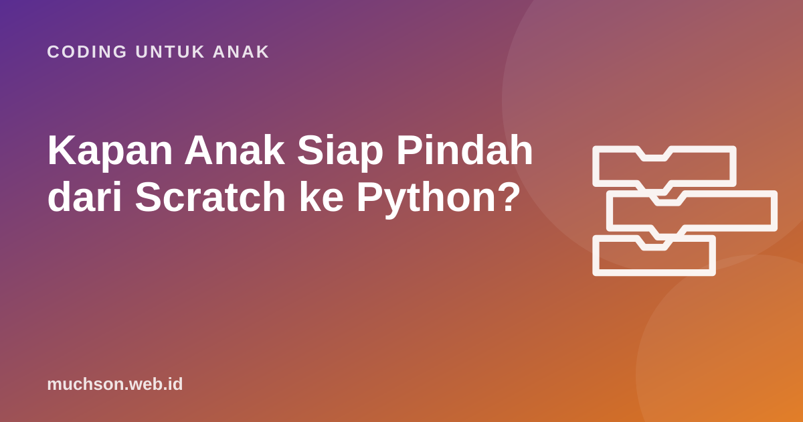

Beranda › Artikel › Coding untuk Anak
Coding untuk AnakKapan Anak Siap Pindah dari Scratch ke Python?
Ada anak yang pindah ke Python terlalu cepat lalu kehilangan semangat karena terus bertemu pesan error. Ada juga yang bertahun-tahun di Scratch sampai bosan. Artikel ini membantu Anda membaca tanda kesiapan anak, lalu memberi rencana transisi bertahap supaya peralihannya mulus.

Kenapa transisi ini terasa berat
Di Scratch, blok hanya bisa dipasang di tempat yang benar. Salah ketik mustahil karena tidak ada yang diketik. Di Python, satu titik dua yang terlupa atau spasi yang tidak rata menghasilkan pesan error. Peneliti pendidikan komputer menyebut ini beban sintaks: anak harus memikirkan logika dan aturan penulisan sekaligus. Karena itu, logika sebaiknya sudah kuat sebelum aturan penulisan ditambahkan.
Tes kesiapan
Konsep yang sama, tampilan berbeda
Kabar baiknya, hampir semua konsep Scratch punya pasangan langsung di Python. Tunjukkan tabel ini ke anak supaya ia sadar sudah menguasai banyak hal:
| Scratch | Python |
|---|---|
| katakan (Halo!) | print("Halo!") |
| tanya (Siapa namamu?) dan tunggu | nama = input("Siapa namamu? ") |
| atur [skor] ke (0) | skor = 0 |
| ubah [skor] sebesar (1) | skor = skor + 1 atau skor += 1 |
| ulangi (10) | for i in range(10): |
| ulangi sampai {kondisi} | while not kondisi: |
| jika {kondisi} maka / jika tidak | if kondisi: / else: |
| acak (1) sampai (10) | random.randint(1, 10) |
| definisikan blok saya | def blok_saya(): |
| daftar | list, misalnya [1, 2, 3] |
Rencana transisi 4 minggu
Proyek tebak angka di minggu ketiga adalah klasik yang sangat cocok, karena anak mungkin sudah membuat versi Scratch-nya. Bandingkan kedua versi bersama anak:
import random
angka = random.randint(1, 100)
tebakan = 0
while tebakan != angka:
tebakan = int(input("Tebak angka 1-100: "))
if tebakan < angka:
print("Lebih besar!")
elif tebakan > angka:
print("Lebih kecil!")
print("Benar! Angkanya", angka)Saat muncul error, bacakan pesannya bersama anak. Python biasanya menyebut nomor baris dan jenis kesalahan, misalnya SyntaxError atau NameError. Belajar membaca pesan error adalah keterampilan, bukan tanda gagal.
Di mana menulis Python?
- Thonny: editor gratis yang dirancang untuk pemula, sudah termasuk Python.
- IDLE: editor bawaan saat memasang Python dari python.org.
- Editor daring: berguna bila tidak bisa memasang aplikasi, tetapi perhatikan kebijakan akun dan iklannya untuk anak.
Tetap boleh kembali ke Scratch
Pindah ke Python bukan berarti meninggalkan Scratch. Banyak programmer cilik memakai Scratch untuk animasi dan prototipe game, dan Python untuk hal lain. Yang penting anak terus berkarya. Jika anak belum siap, fokuskan dulu pada proyek Scratch yang menantang. Kurikulum PixelKode menutup tahap ini dengan proyek akhir yang memakai semua konsep yang dibutuhkan sebelum Python.
Tanya jawab
Umur berapa anak bisa belajar Python?
Apakah harus menguasai semua Scratch dulu?
Editor Python apa yang cocok untuk anak?
Bagaimana jika anak frustrasi dengan error?
Sumber dan bacaan lanjut
- Python.org: unduh Python dan dokumentasi
- Thonny: Python IDE untuk pemula
- Python: modul turtle
- Scratch untuk pendidik